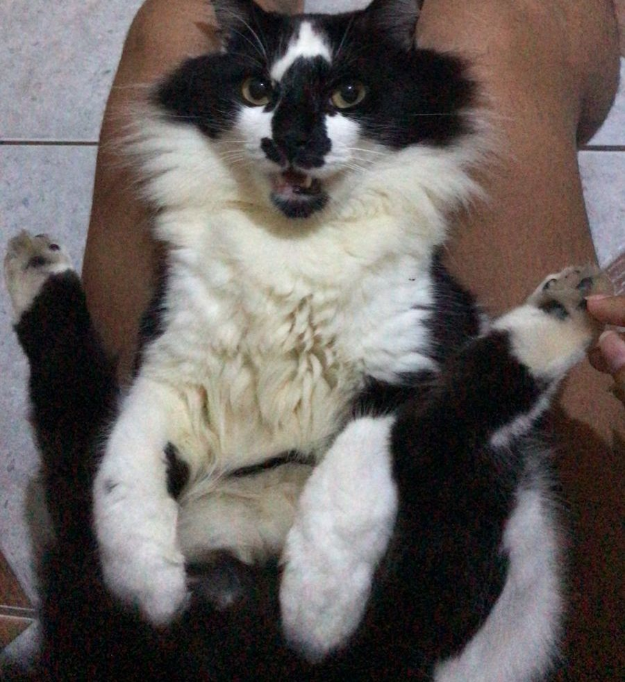

Jefferson Santos
Dev. FrontEnd Jr


Sobre
Oi! Meu nome é Sherlock, seja bem vindo(a)!
Sou um desenvolvedor FrontEnd Jr e estou me aperfeiçoando cada vez mais para ser um bom profissional. Tenho experiência com HTML, CSS e JavaScript, uma prova disso é esse mini portifólio aqui. Adoro um suquinho de laranja e meus hobbies atuais são jogar futebol, assistir animes e estudar programação.